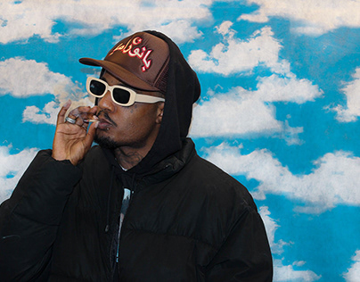

DEREK, nome completo: DEREK Luccas da Silva
Derek Luccas tem 21 anos e é da zona leste de São Paulo. Ele era jovem quando seus pais se separaram, e ele foi criado só com sua mãe, mas mesmo assim mantia muito contato com seu pai, e ambos dos seus pais faziam Rap, e isso foi influênciando na vida de Derek e desde cedo ele começou a gostar disso e criasse raízes dentro do Hip Hop. E quando Derek realmente começou a manter um contato forte com o rap foi quando ele entrou em um grupo de rap chamado "Informal", mas menino Derek que faz as nadegas femininas rotacionarem como Spinner saiu do grupo e começou carreira a solo. Quando ele saiu desse grupo ele cantava boombap, mas queria sim fazer trap, então o primeiro som dele no trap foi "5 Minutos" produzido por Lucas Spike, e esse som da pra notar que Derek ainda passava por uma transição desses dois gêneros musicais. Seu segundo som também no trap foi "Palestina", e logo na sequência, saiu sua primeira mixtape, títulada de "Paris", ela conta com 11 faixas e com participações importantes, como a do Baco Exu do Blues, MC Igu e outros.
VEIGH, nome completo: Thiago Veigh
Thiago Veigh, 22 anos, nasceu e cresceu na cidade de Itapevi, na zona oeste de São Paulo, e é cantor e compositor do gênero trap, uma variação do rap. Com voz forte e melódica, um beat eletrônico grave e letras profundas sobre emoções e críticas sociais, o artista começou sua carreira com seu amigo Heitor, no extinto duo Constelação. Nos anos 2018 e 2019, o Constelação lançou quatro músicas produzidas pela Covil Corporation, um estúdio de gravação com sede em Itapevi. Na época, ele conheceu o produtor André Nagalli e decidiu lançar sua primeira faixa fora do duo, intitulada Indispensável. A partir de 2019, ele se juntou a outros nomes em ascensão da cena e participou do feat com Yunk Vino e Jé Santiago na faixa Pandora, que integra o EP The Magic Show: Snippet, de Nagalli. No ano seguinte, alguns lançamentos de Veigh passaram a ter mais destaque, como Ricos em Breve, Dripper, 20Minutes e Fender. Em 2020, o cantor seguiu investindo em parcerias com outros grandes nomes do trap paulista, e, no ano seguinte, consolidou seu nome em hits como Foto do Corte, Sigo as Estrelas e Tipo Akon. Mas foi a partir do seu show no Festival Cena, em 2022, que Veigh se tornou ainda mais conhecido e passou a expandir seu público.